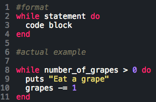
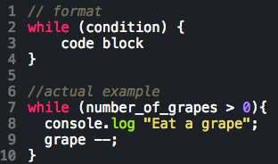
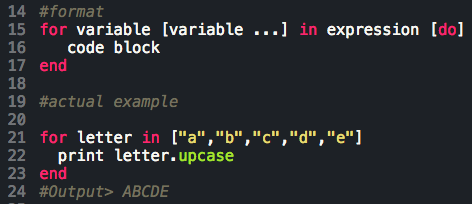

While loops are generally executed upon a condition being true. Once the statement is no longer true, the loop ends (except in the case of an infinite loop, but that's a mistake!). In ruby, a while loop begins with while, followed by a conditional statement (usually a comparison operator or a boolean value) and then the keyword "do". The code block beneath executes each time during the loop until the condition is met, then breaks. The loop itself will look something like this:

In javascript, a while loop might look a bit different:

Notice the syntax is a bit more detailed here.
In ruby, the for loop is similiar to the "loop.each do |variable|[code]" in heart, but looks like this:

In javascript, for loops will be more frequently used. It likes to use 3 parameters. The first argument gets executed before the loop begins, the second will define the condition that runs the loop, and the third is an action executed during each loop. A common for loop in javascript is a counter loop.
I'm sure you saw that js looked like a bunch of brackets and semicolons slopped together. That's the obvious difference. But not all the differences are at face value. In ruby, you can use "for" and "in" to access array and enum objects, but in js does not work on arrays. Another difference, is while ruby has a few keywords on deck for creating loops, js prominently relies on just the above two. And while that may seem limiting, if you put in the elbow grease, you can actually pull off the same kind of loops as exists in ruby.